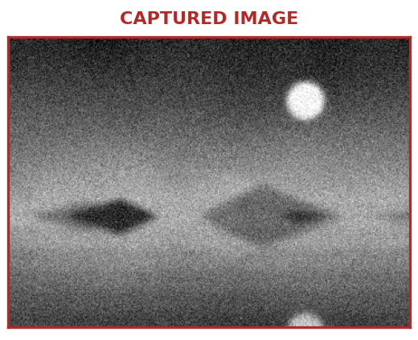
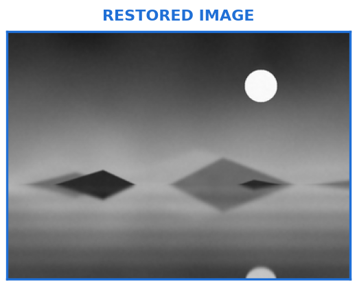
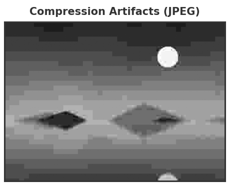
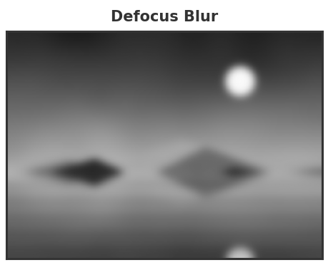
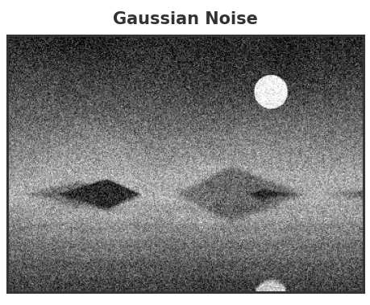
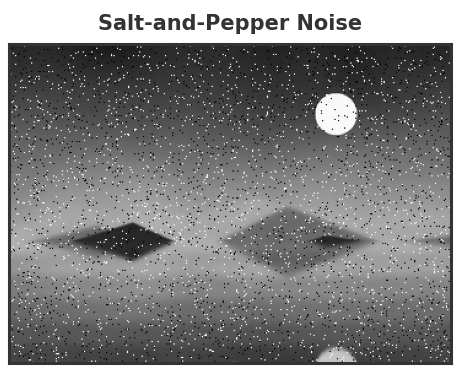

IAI · UET · VNU
Presenter: Trinh Ngoc Huynh
Email: huynhtn@vnu.edu.vn
What is image restoration and why do we need it?
Degradation process, noise models, blur models
Denoising, deblurring, periodic noise reduction
Quality metrics and visual comparison
Real-world images are often degraded by noise, blur, or compression artifacts during image acquisition, transmission, or storage.

Recover the original image using a known or estimated degradation model.

| Image Restoration | Image Enhancement |
|---|---|
| Recovers the true, original image | Makes the image look better to the eye |
| Objective: judged by how accurate it is | Subjective: judged by how it looks |
| Relies on a model of how the image was degraded | Does not need to know how the image was degraded |
| Denoising, deblurring, deconvolution | Contrast enhancement, histogram equalization, sharpening |




| Medical Imaging | Noise reduction |
| Remote Sensing | Deblurring and atmospheric correction |
| Surveillance | Low-light denoising |
| Autonomous Driving | Motion deblurring |
| Smartphone Photography | Denoising and deblurring |
\[g(x, y) = h(x, y) * f(x, y) + \eta(x, y)\]
Goal: recover \( f(x,y) \) given \( g(x,y) \), and knowledge (or estimates) of \( h \) and \( \eta \).
Each blur type corresponds to a different point spread function \( h(x, y) \).
\[\hat{F}(u,v) = \left[\frac{1}{H(u,v)} \frac{|H(u,v)|^2}{|H(u,v)|^2 + K}\right] G(u,v)\]
Detect the noise in the Fourier domain first, then design a filter that removes it while preserving the rest of the spectrum.